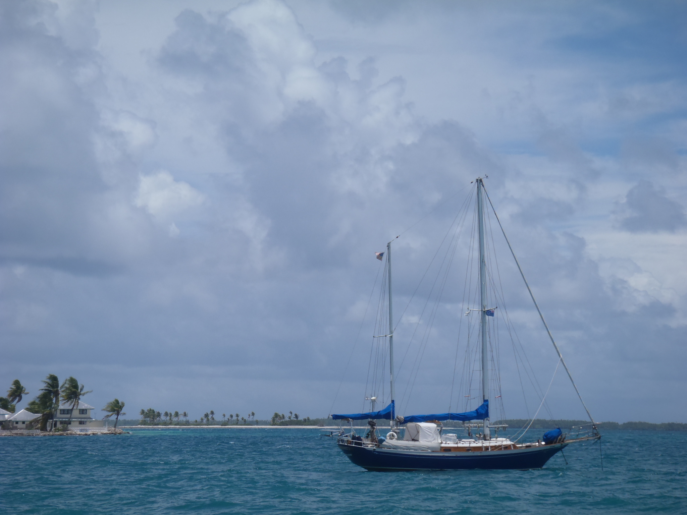
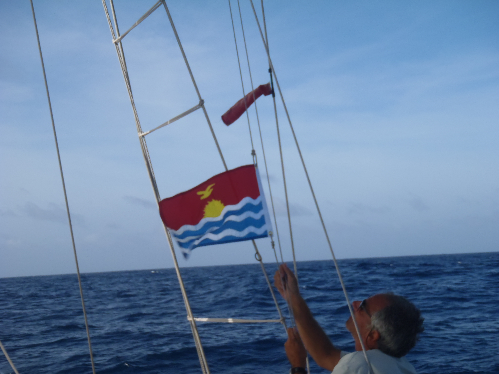
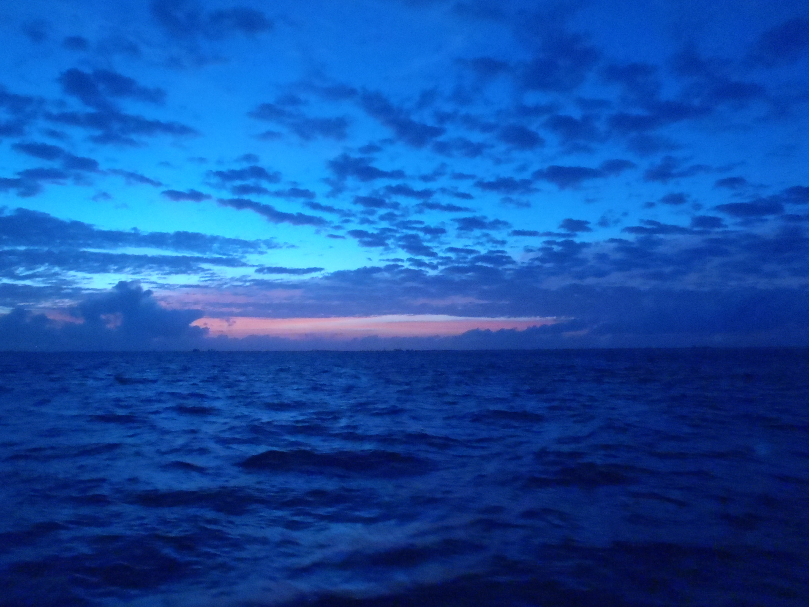

Cinquième étape, de Tongareva (Cook Islands) à Kiritimati (Kiribati, Îles de la Ligne du Nord) |
|

Le temps n'a pas changé, c'est dommage, mais il faut qu'on quitte Omoka. Le fond tient vraiment bien,
on n'a pas reculé d'un pouce ; pourtant ça souquait fort. Mais le fait que Gudgeon Bay
soit sous le vent du lagon génère bien trop de mer ici...
Avec un rapide aller-retour à terre, on a obtenu la clearance de la part de Taime. Il nous a offert des bananes. À ramer contre le vent dans l'annexe, on a cassé une dame de nage en quittant la plage, mais on a pu godiller jusqu'au bateau, c'était quelque chose. L'annexe faisait des bonds de cabri (moralité : il est bon de savoir godiller). On est parti pour de bon à 11 heures, et on a franchi la passe Taruia à 11:15, ça soufflait entre 5 et 6 Beaufort, d'Est. Peu après, on porte . Il y a deux trains de houle superposés, ça génère une mer désagréable lorsqu'on quitte la protection de l'atoll. Pour tout arranger, on subit aussi une branche du contre-courant équatorial, contre le vent. La houle tombe un peu dans la soirée. |
|
| Au travers dans l'alizé, le courant qu'on avait hier semble être tombé. | |
|
Moins de mer que les jours précédents, c'est très agréable ! On a envoyé
.
Au bon plein, sur la route.
Des grains pendant la nuit. |
|
| Encore du courant contre nous, genre 1.5 nœud, au Sud-Sud-Est. | |
|
La nuit est fraîche. Toujours du courant contre nous, du Sud-Sud-Ouest au Sud-Ouest.
Et cette houle permanente tombe... Comme c'est agréable ! Ciel couvert cette nuit. |
|
|

La houle est de retour.
On a franchi la Ligne à nouveau vers 4 heures ce matin Le courant tourne à l'Ouest, à environ deux nœuds. Tranquille et grand beau temps. On sèche. On longe la cote Sud de Kiritimati pendant la nuit... |
|
|

À nouveau, comme à chaque fois, on est en avance !
Comme d'habitude, on tire des bords pour attendre le jour...
Finalement, on mouille au lever du jour à l'extérieur du lagon, près du village de London. Le truc, c'est de mouiller dans un patch de sable. Le mouillage a l'air bien abrité. Ça nous changera. Il est intéressant de constater que cette fois, c'est le pilote automatique qui a barré tout le temps. La façon dont on établit la voilure n'a pas le même objectif que si on était en course. On n'est pas en train d'essayer de grapiller chaque dixième de nœud. Le plus important est d'équilibrer le bateau, de façon à ce que le pilote consomme le moins d'énergie possible. Moins il travaille, mieux c'est. Et ça va très bien avec le confort de l'équipage. On perd peut-être un demi nœud dans certains cas, mais un bateau bien équilibré et bien barré est bien plus agréable, et bien plus confortable. En conséquence, ça nous est égal si l'étape dure un peu plus longtemps... |
|